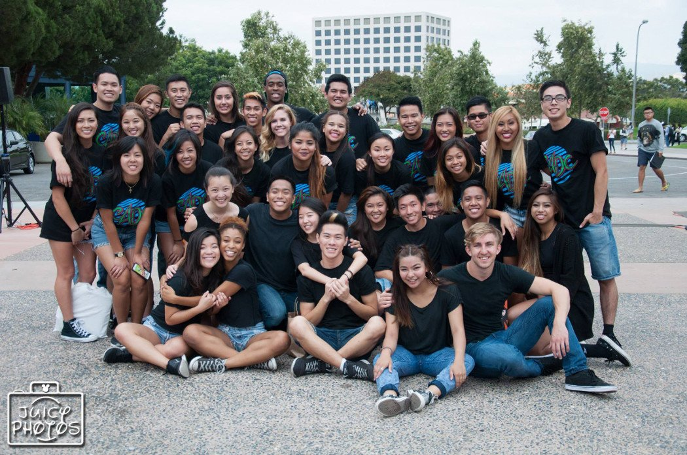

Chinese Association Dance Crew


Formed in 1994, CADC has since become a prominent name within Southern California's hip hop dance scene. CADC is strictly a collegiate team, with all members currently enrolled as UCI students. CADC stresses having fun through competitive and exhibitive hip hop dancing.